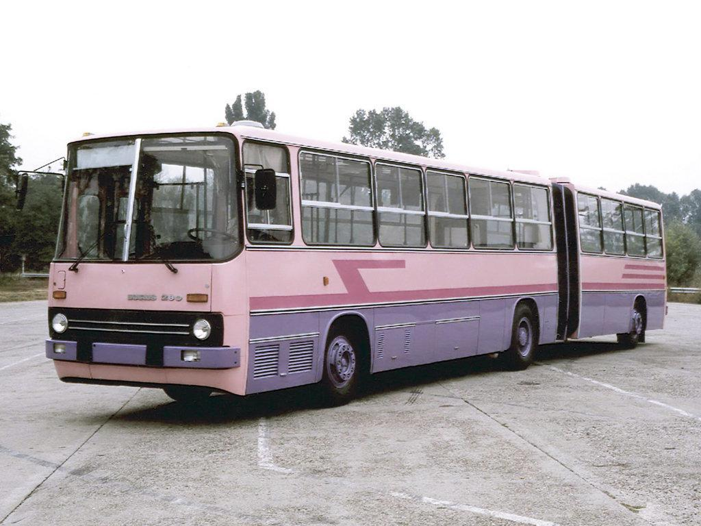

Ikarus 435
- A 435-tös típusnak az alábbi változatait gyárották:
- 435.06 - Készült a BKV számára.
- 435.11 - Készült a Vasi Volán és Tisza Volán számára.
- 435.12A - Készült az Alba Volán számára.
- 435.12B - Készült Pécsi Közlekedési Zrt. számára.
- 435.13A - Készült a Nógrád Volán számára.
- 435.13B - Készült a Tisza Volán számára.
- 435.13C - Készült a Gemenc Volán számára.
- 435.14 - Készült a Volánbusz számára.
- 435.17 - Készült a Nógrád Volán és Moszkva számára.
435.90 - Készült az Arrivabus számára.

Ikarus
200-as buszcsalád